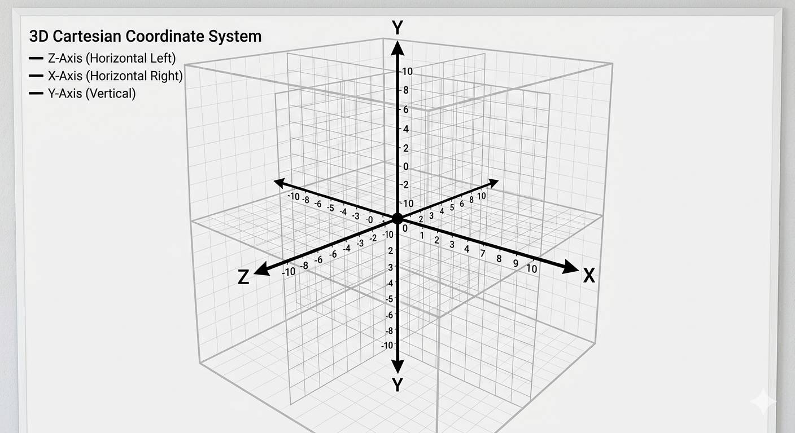
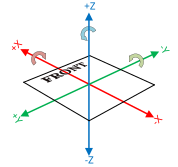
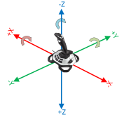

On a controller, there’s the left joystick and the right joystick. You can use the following methods to get the XY axes from each of these joysticks:

In school, you might see this 3D coordinate system. Here, positive X is East, positive Y is Up, and positive Z is South. This would be called EUS or East-Up-South which corresponds with XYZ.

In FRC, we use NWU for the main field/ robot and NED for controller joysticks.
An image in NWU is displayed with the front of the field labeled. Here, positive X is forward, positive Y is left, and positive Z is UP. Also note that counterclockwise is considered positive.

Unfortunately, controllers also use their own distinct coordinate system. They use NED which is pictured to the left. This one is particularly different because it’s about rotating around each axis, not moving along it.
Positive X would be moving the joystick to the right. Positive Y would be moving the joystick backwards. Positive Z would be twisting the joystick clockwise (which you can’t do on a controller).
Quite frankly, this is a difficult topic to get fluent in. While you’re getting the hang of it feel free to use this conversion chart for controller input:
| Robot Direction | Robot Axis | Controller Axis |
|---|---|---|
| Forward | Positive X | Negative Y |
| Backward | Negative X | Positive Y |
| Right | Negative Y | Negative X |
| Left | Positive Y | Positive X |
An Extra Note:
The robot only understands information relative to itself (“move forward” tells it to move in the direction it’s currently facing). This type of instruction/ information is robot relative. Field relative means that the information is relative to the field instead of the robot. Our joysticks are one example of this because forward is always the same no matter what direction the robot is facing.
When dealing with coordinates make sure you always know if the information is robot or field relative.